Punchboard 2 mm & Encaixe
Trechos modulares de 57 mm em papelão cinza rígido de 2 mm evitam que o esbarrão involuntário de um jogador desalinhe a pista inteira durante as ultrapassagens.
Case 03 · Board game · Identidade visual · Ilustração
Identidade visual, ilustrações e diagramação de Loony Races, board game da editora Coliseu Hobbies com game design de Leandro Maciel. Da marca à caixa: dez pilotos, cartas, trechos de pista, marcadores e o manual em português e inglês.
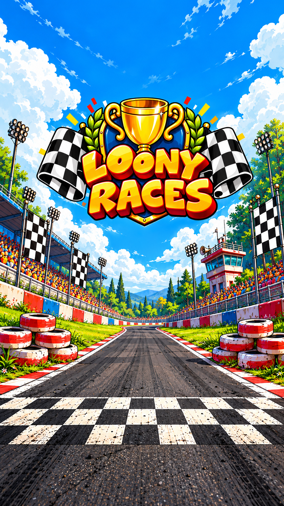
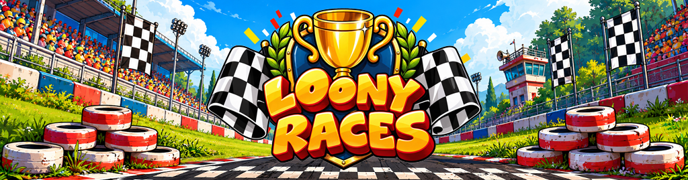
O problema
No jogo, o príncipe da Zuretânia oferece toda a sua fortuna ao vencedor de um GP sem traçado definido: a pista vai sendo montada enquanto os carros avançam, e vale atalho, tachinha e míssil de supercola. Por ser um jogo de venda internacional, a arte precisava funcionar para jogadores de vários países.
Com o modo Rac3r, uma inteligência artificial em cartas, dá para jogar sozinho.
minutos por partida, a partir de 10 anos.
Autor das regras. A marca, as ilustrações e a diagramação são minhas.
01 · Marca
Troféu dourado sobre escudo azul, bandeiras quadriculadas dos dois lados e letras infladas em amarelo e laranja. O mesmo selo fecha a caixa, o manual e o pôster, e vai no verso dos três montes de cartas, onde a cor do fundo diz de que monte a carta é.
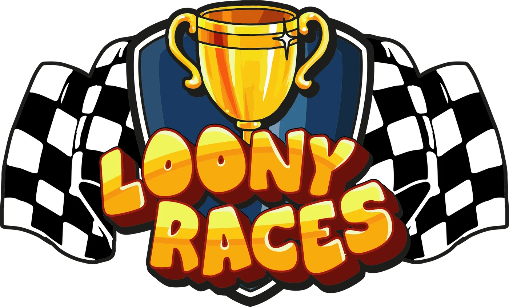
02 · Pilotos
Por ser um jogo de venda internacional, cada um dos dez pilotos parte de elementos culturais do seu país, e o carro conta a mesma piada: o ônibus de dois andares de Lewis Puddington, o carro com caveira mexicana de Solana Guacamolez. Os nomes brincam com pilotos famosos e comidas típicas.
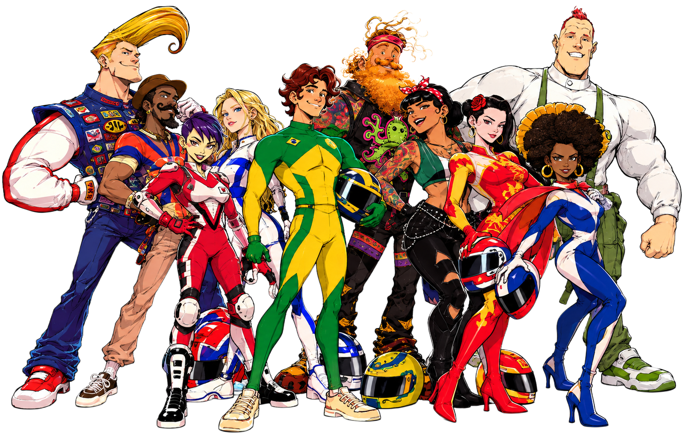
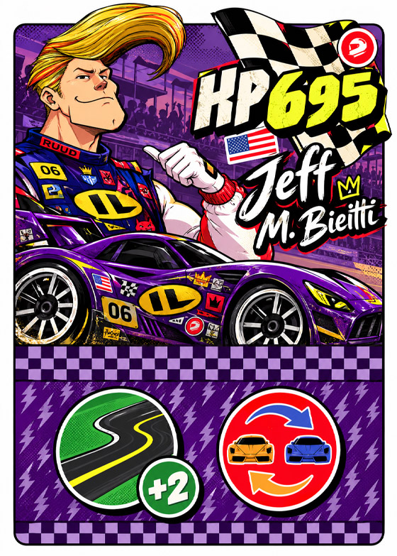
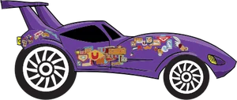
Cada carta traz o carro, a força em HP e duas habilidades em ícones. O maior HP em jogo começa com o marcador de Primeiro Jogador.
03 · Cartas
Toda a dinâmica gira em torno de dois tipos de carta de ação. As verdes movem o carro; as amarelas atrapalham os rivais ou protegem você. Nenhuma tem frase: cada efeito virou ícone e ilustração, e o texto ficou todo no manual, diagramado em português e inglês.
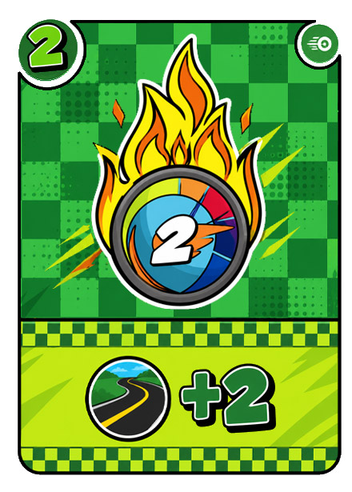
04 · Pista
O tabuleiro é formado por trechos de 57 mm comprados conforme os carros avançam: o caminho pode sair seguro ou cheio de buracos, óleo e obras. O verso de todos é grama, e cada desenho foi feito em três terrenos: asfalto, lama e gelo.
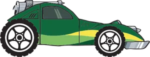
LargadaJogue uma carta verde para avançar.
05 · Ergonomia de mesa & Escala humana
Um jogo para até 10 pessoas não cabe em uma tela de computador. Cada decisão de dimensão — do punchboard de 2 mm ao tamanho das cartas de ação — foi validada em protótipos de papel e madeira para garantir visibilidade a mais de 1,5 metro e conforto tátil.
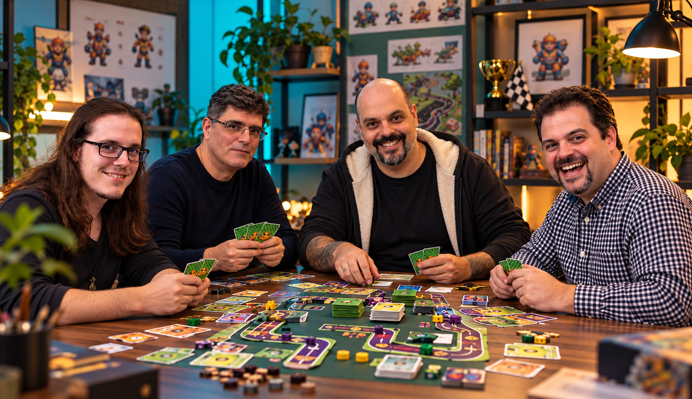
Trechos modulares de 57 mm em papelão cinza rígido de 2 mm evitam que o esbarrão involuntário de um jogador desalinhe a pista inteira durante as ultrapassagens.
Óleo, buracos e turbos medem no mínimo 24 mm de altura e possuem silhuetas sólidas em preto/branco para serem reconhecidos do lado oposto de uma mesa de 2 metros.
Optou-se pelo formato Bridge em vez de Tarot ou Poker para permitir que crianças e adultos sustentem com facilidade um leque de até 7 cartas de ataque sem cansaço muscular.
06 · Acessibilidade & Daltonismo
Com 10 pilotos disputando o mesmo espaço e 3 tipos de terreno com atrito distinto, confiar unicamente em matizes cromáticos excluiria jogadores com discromatopsia (Protanopia, Deuteranopia e Monocromia). Cada elemento possui reforço geométrico, textura tátil e silhueta exclusiva.
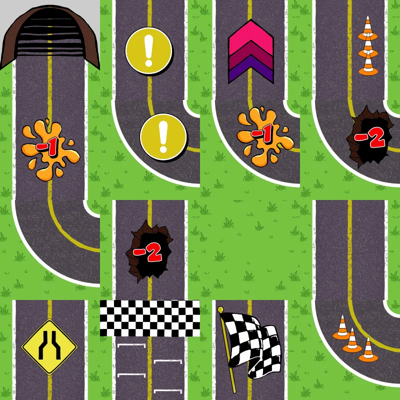
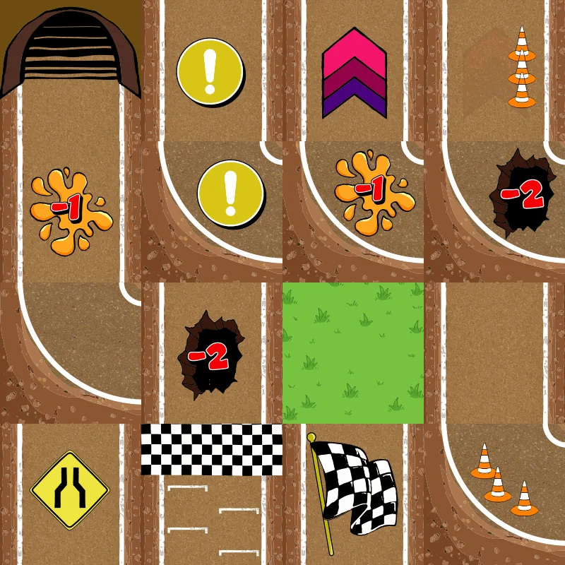
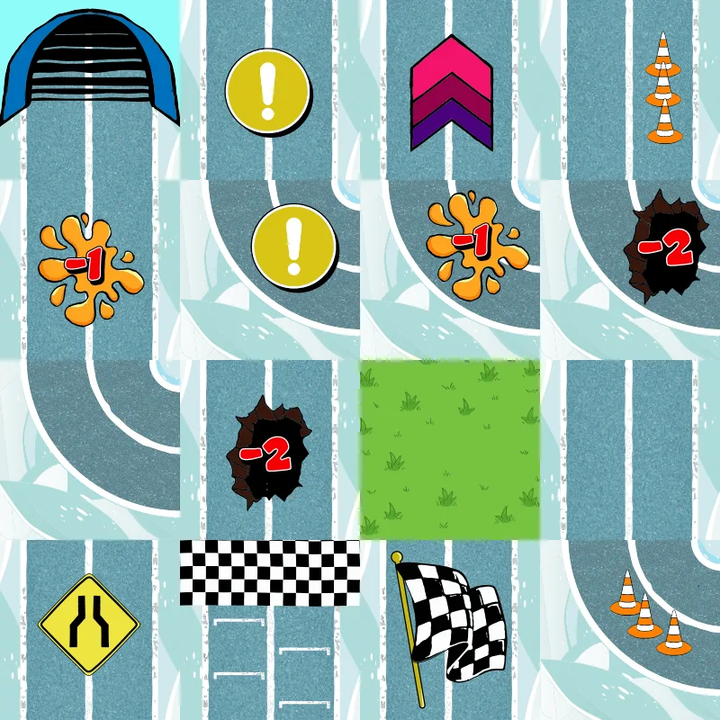
07 · Caixa e manual
As regras são explicadas com diagramas feitos dos próprios componentes: trechos, cartas e carros arrumados como numa partida, com cada passo numerado. O manual de 16 páginas foi diagramado em português e em inglês sobre a mesma grade.
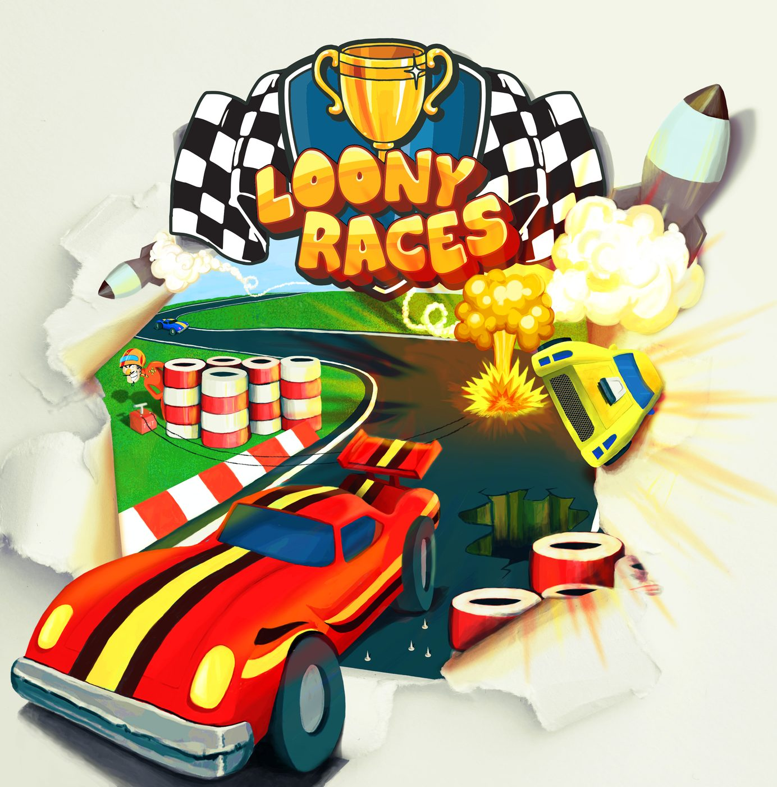
Sistema visual
A paleta sai dos próprios componentes: vermelho para pilotos, amarelo para ações, verde para movimento; grama e asfalto na pista, e o céu da caixa por trás de tudo.
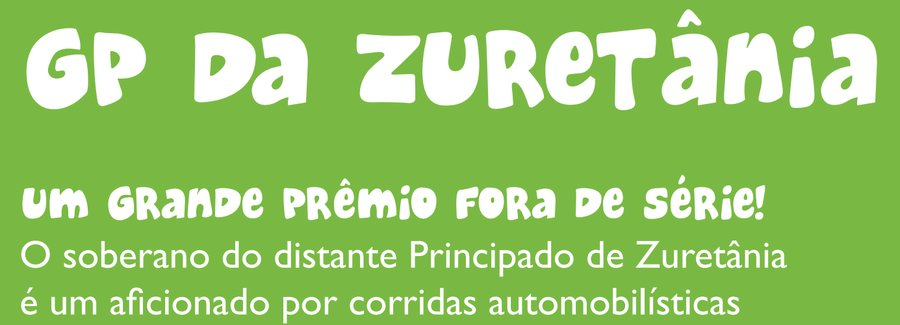
Um marcador, dois lados: Tachinhas na pista; quem passa por elas vira o marcador para STOP e faz um Pit Stop Forçado.
Resultado
A Coliseu Hobbies levou o jogo a financiamento coletivo e anunciou sua apresentação no Diversão Offline, em março de 2018. Não tenho números de vendas para mostrar; o que mostro é o que saiu deste projeto, com arquivo de impressão para cada peça.
pilotos ilustrados, cada um com seu carro.
cartas de ação: 74 verdes e 46 amarelas, além das cartas de piloto.
trechos no jogo básico, com Largada e Chegada, e versões em lama e gelo.
marcadores de Tachinhas/STOP e o marcador de Primeiro Jogador.
páginas, diagramadas em português e em inglês.
centímetros de lado: tampa de 26 × 26 × 8 cm com ilustração e laterais.